Stat2: Lösung 2.1
Lösungsweg
SAR <- read.delim(here("data","SAR.csv"), sep = ";")SARExplorative Datenanalyse
summary(SAR) area richness
Min. : 0.0001 Min. : 1.00
1st Qu.: 0.0010 1st Qu.: 4.00
Median : 0.1000 Median : 9.00
Mean : 9.4017 Mean :16.37
3rd Qu.: 1.0000 3rd Qu.:24.00
Max. :100.0000 Max. :85.00 boxplot(SAR$area) # extrem rechtsschief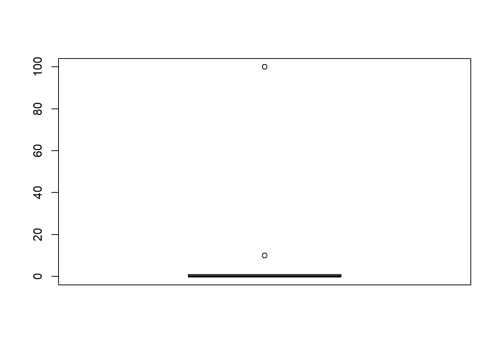
boxplot(SAR$richness) # extrem rechtsschief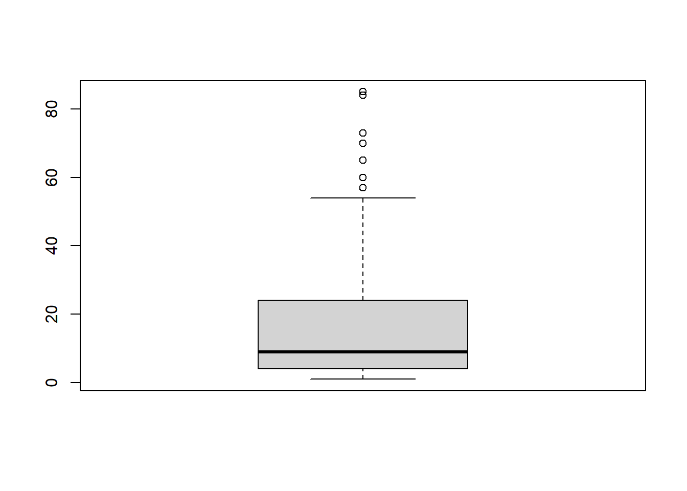
plot(richness~area, data = SAR) # sieht nicht linear aus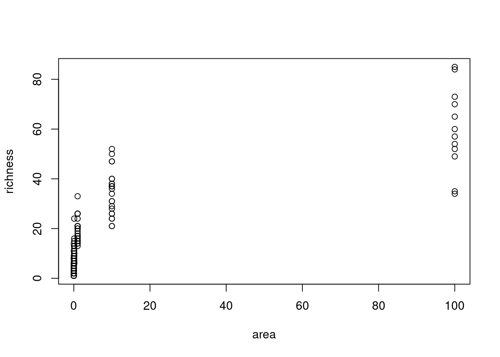
Einfaches lineares Modell
lm.1 <- lm(richness~area, data = SAR)
summary(lm.1)
Call:
lm(formula = richness ~ area, data = SAR)
Residuals:
Min 1Q Median 3Q Max
-29.567 -8.474 -3.503 6.112 35.317
Coefficients:
Estimate Std. Error t value Pr(>|t|)
(Intercept) 11.4742 0.9582 11.97 <2e-16 ***
area 0.5209 0.0342 15.23 <2e-16 ***
---
Signif. codes: 0 '***' 0.001 '**' 0.01 '*' 0.05 '.' 0.1 ' ' 1
Residual standard error: 11.27 on 154 degrees of freedom
Multiple R-squared: 0.601, Adjusted R-squared: 0.5984
F-statistic: 231.9 on 1 and 154 DF, p-value: < 2.2e-16Modelldiagnostik
par(mfrow = c(2, 2))
plot(lm.1)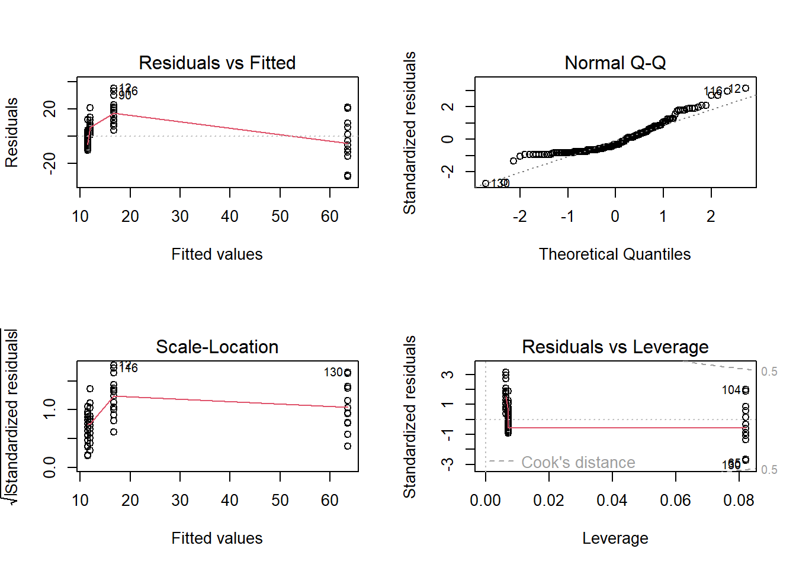
Ergebnisplot
par(mfrow = c(1, 1))
plot(SAR$area, SAR$richness, xlab = "Area [m²]", ylab = "Species richness")
abline(lm(richness~area, data = SAR), col = "red") #Alternative 1
abline(lm.1, col = "red") #Alternative 2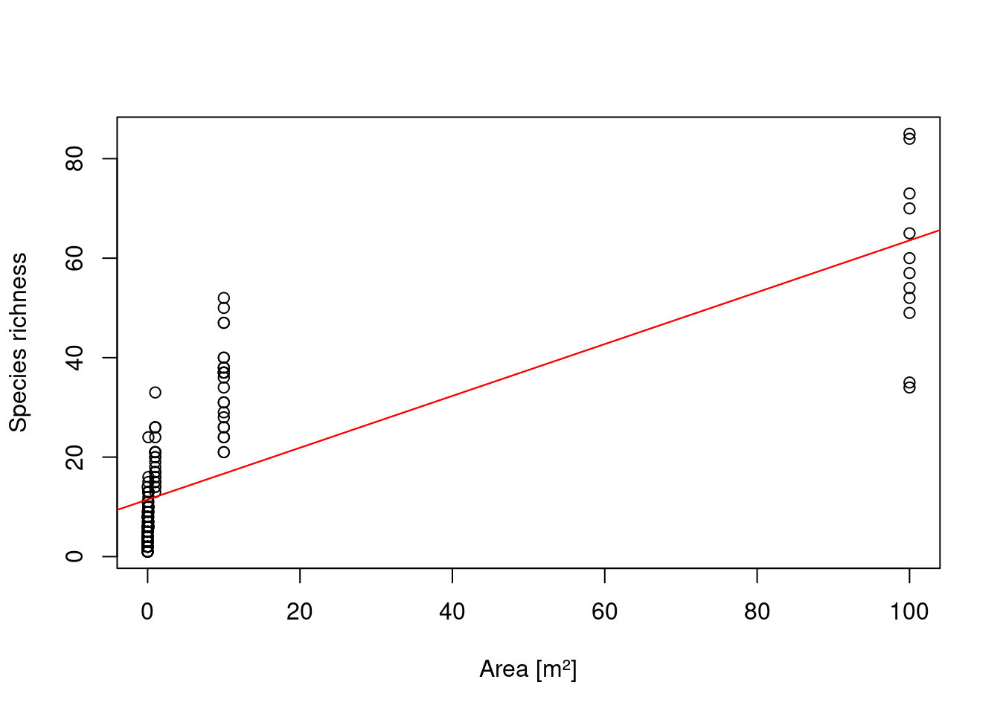
Lösung A: log-Transformation der abhängigen Variablen
par(mfrow=c(1,2))
boxplot(SAR$richness)
boxplot(log10(SAR$richness))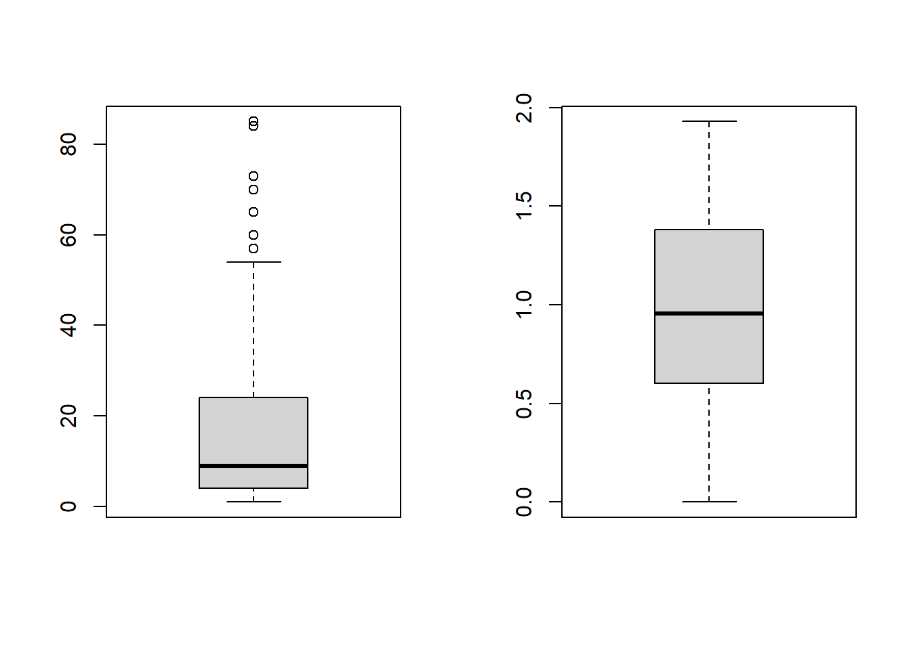
hist(SAR$richness)
hist(log10(SAR$richness))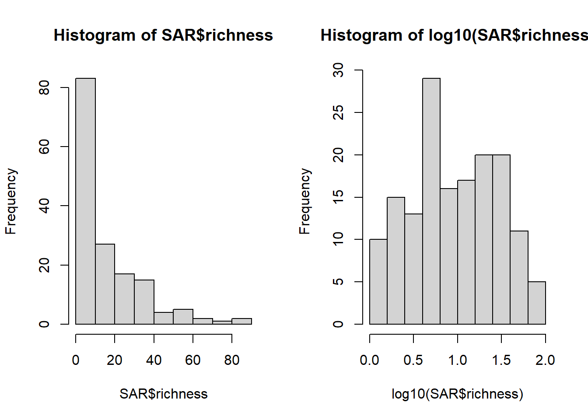
SAR$log_richness <- log10(SAR$richness)
lm.2 <- lm(log_richness~area, data = SAR)
summary(lm.2)
Call:
lm(formula = log_richness ~ area, data = SAR)
Residuals:
Min 1Q Median 3Q Max
-0.85613 -0.34114 -0.01204 0.36365 0.75729
Coefficients:
Estimate Std. Error t value Pr(>|t|)
(Intercept) 0.856116 0.036657 23.36 < 2e-16 ***
area 0.010259 0.001309 7.84 6.94e-13 ***
---
Signif. codes: 0 '***' 0.001 '**' 0.01 '*' 0.05 '.' 0.1 ' ' 1
Residual standard error: 0.4313 on 154 degrees of freedom
Multiple R-squared: 0.2853, Adjusted R-squared: 0.2806
F-statistic: 61.47 on 1 and 154 DF, p-value: 6.939e-13Modelldiagnostik
par(mfrow = c(2, 2))
plot(lm.2)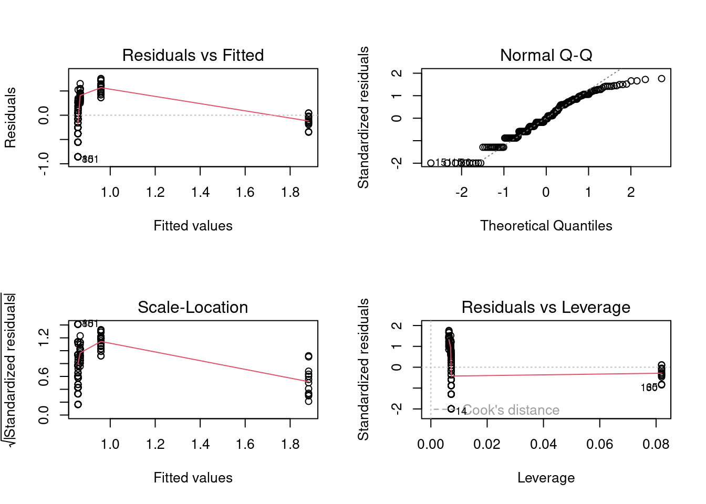
#sieht noch schlechter aus
Lösung B: log-Transformation beider Variablen
par(mfrow=c(1,2))
boxplot(SAR$area)
boxplot(log10(SAR$area))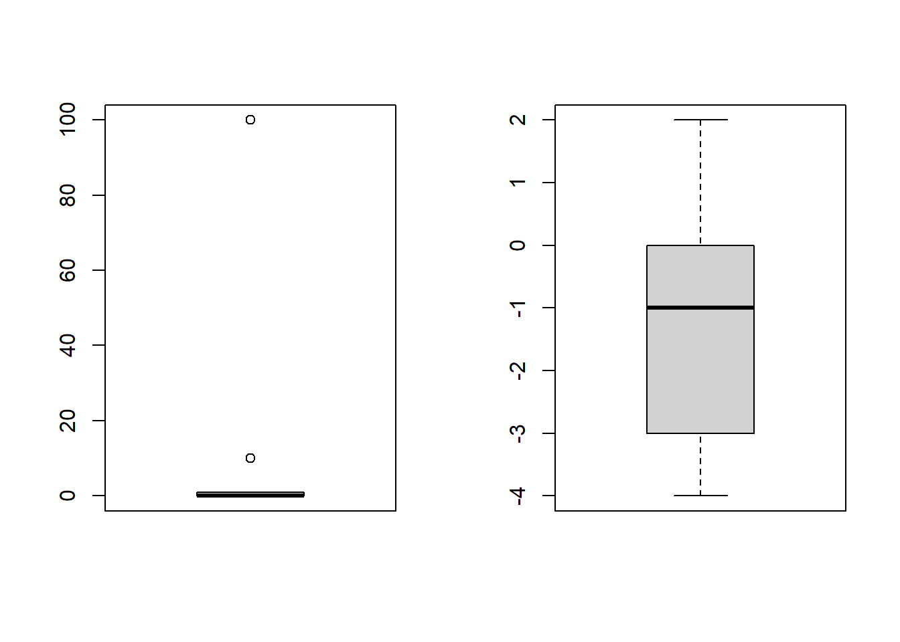
hist(SAR$area)
hist(log10(SAR$area))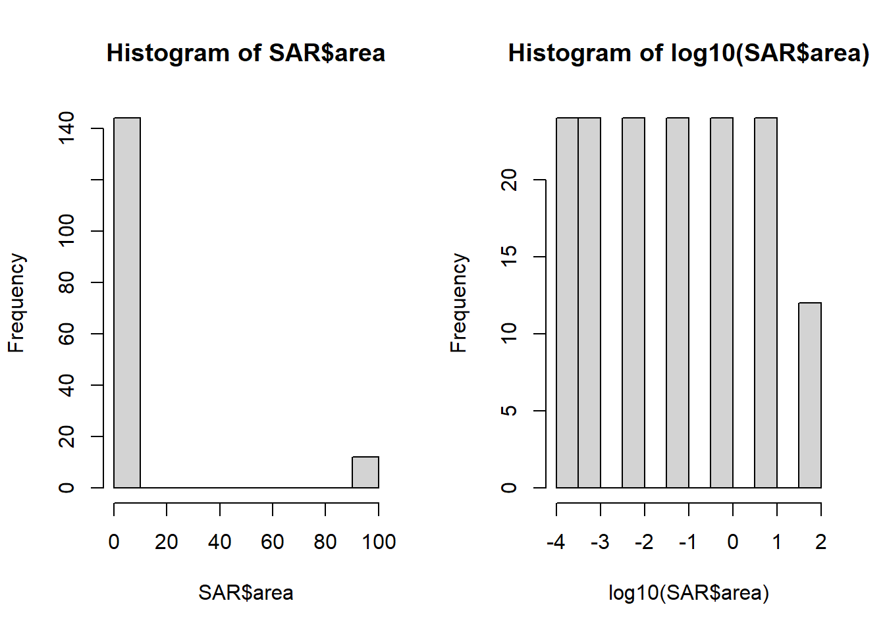
SAR$log_area <- log10(SAR$area)
lm.3 <- lm(log_richness~log_area, data = SAR)
summary(lm.3)
Call:
lm(formula = log_richness ~ log_area, data = SAR)
Residuals:
Min 1Q Median 3Q Max
-0.50241 -0.09353 0.02130 0.09965 0.40068
Coefficients:
Estimate Std. Error t value Pr(>|t|)
(Intercept) 1.265730 0.015607 81.10 <2e-16 ***
log_area 0.254440 0.006926 36.73 <2e-16 ***
---
Signif. codes: 0 '***' 0.001 '**' 0.01 '*' 0.05 '.' 0.1 ' ' 1
Residual standard error: 0.1633 on 154 degrees of freedom
Multiple R-squared: 0.8976, Adjusted R-squared: 0.8969
F-statistic: 1349 on 1 and 154 DF, p-value: < 2.2e-16Modelldiagnostik
par(mfrow = c(2, 2))
plot(lm.3)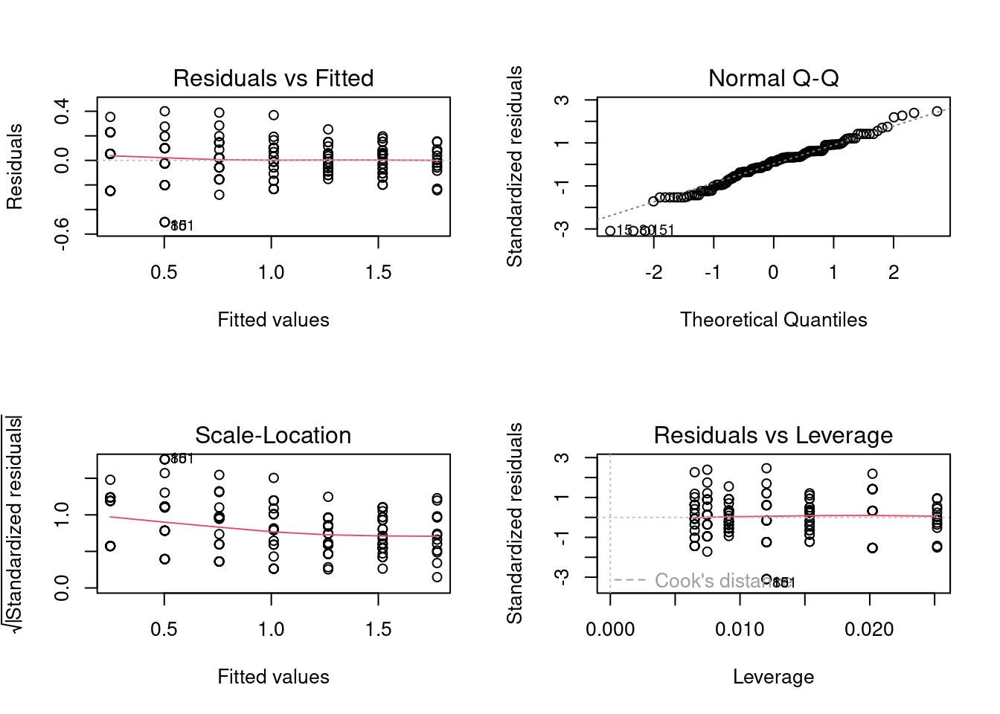
das sieht jetzt sehr gut aus, bis auf zwei Ausreisser im QQ-Plot
Ergebnisplots C
par(mfrow = c(1, 1))
xv <- seq(0, 100, 0.1)Ergebnisplots
par(mfrow = c(1,1))
xv <- seq(0,100,0.1)A. lineares Modell mit log-transformierter Abhängiger
plot(SAR$area, SAR$richness)
yv1a <- 10^predict(lm.2, list(area = xv))
lines(xv, yv1a, col = "blue")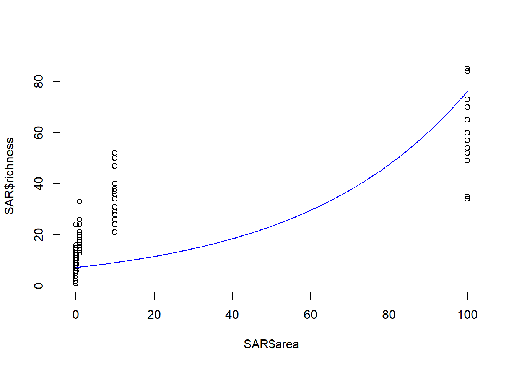
B. lineares Modell mit log-Transformation beider Variablen
xvlog <- seq(-4,2,0.1)
plot(SAR$log_area, SAR$log_richness, xlab = "log10 (Fläche [m²])", ylab = "log10 (Artenreichtum)")
yv1b <- predict(lm.3, list(log_area = xvlog))
lines(xvlog, yv1b, col = "green")
C. lineares Modell mit log-Transformation beider Variablen (zurücktransformiert)
plot(SAR$area, SAR$richness, xlab = "Fläche [m²]", ylab = "Artenreichtum")
yv1b <- predict(lm.3, list(log_area = xv))
lines(10^xv, 10^yv1b, col = "green")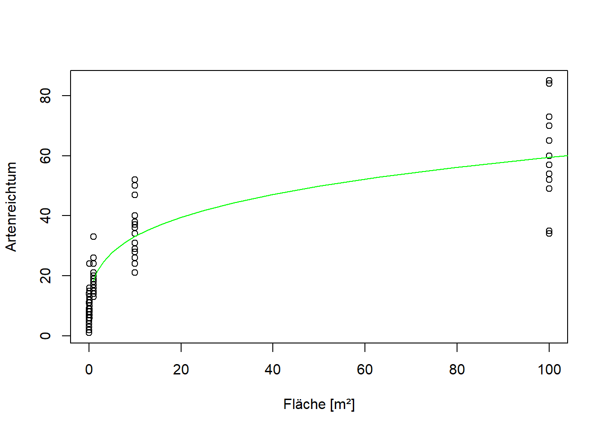
Modelle im Vergleich
#Modelle im Vergleich
plot(SAR$area, SAR$richness)
abline(lm.1, col="red")
lines(xv, yv1a, col="blue")
lines(10^xv, 10^yv1b, col="green")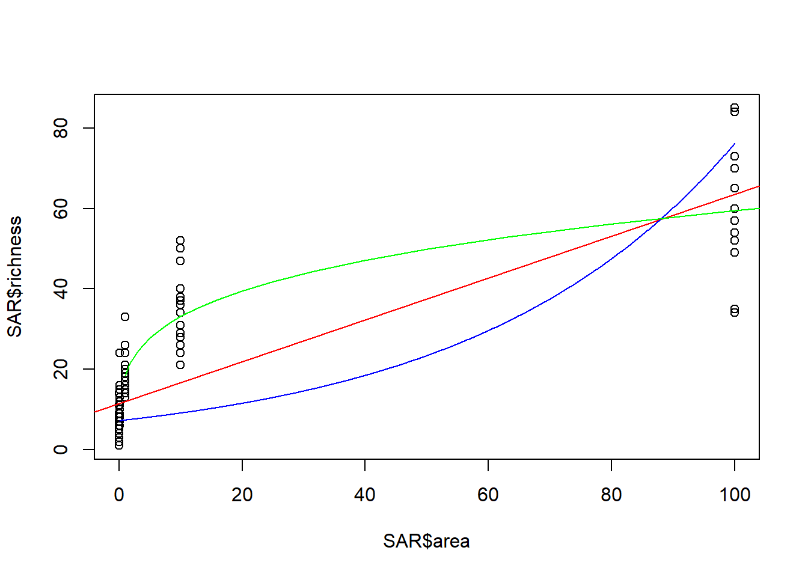